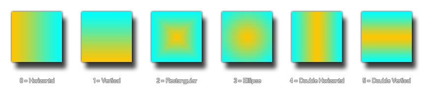

background_create_gradient(w, h, color1, color2, kind);
| Argument | Description |
|---|---|
| w | The width of the new background. |
| h | The height of the new background |
| color1 | The first color of the gradient. |
| color2 | The second color of the gradient. |
| kind | The type of gradient (0 - 5). |
Returns : Real
This function creates a new background of the given width and height cleared to the given colored gradient. The function returns the index of the newly created background and this should be stored in a variable
and used in all further calls that require this background (If there is an error, the function returns -1). The gradient itself can be set to one of 6 different kinds as shown below:

NOTE : When you create a background dynamically with GameMaker:Studio you must remember to remove it again (with background_delete)
when no longer needed, otherwise there is risk of a memory leak which will slow down and eventually crash your game.
t_back = background_create_gradient(room_width, room_height, c_red, c_blue, 0);
The above code will create a new background the same size as the current room and color it with a red/blue horizontal gradient. The index of this new background is stored in the variable "t_back".